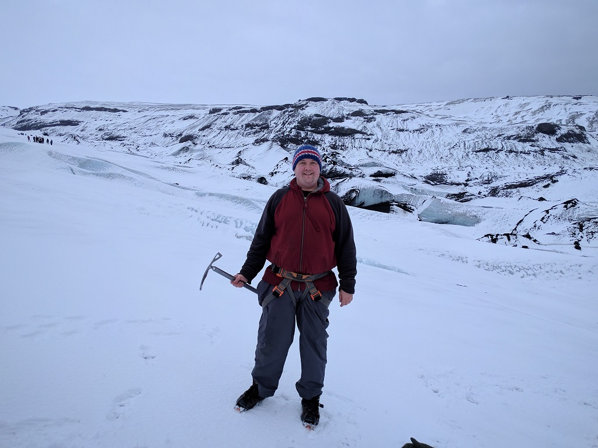
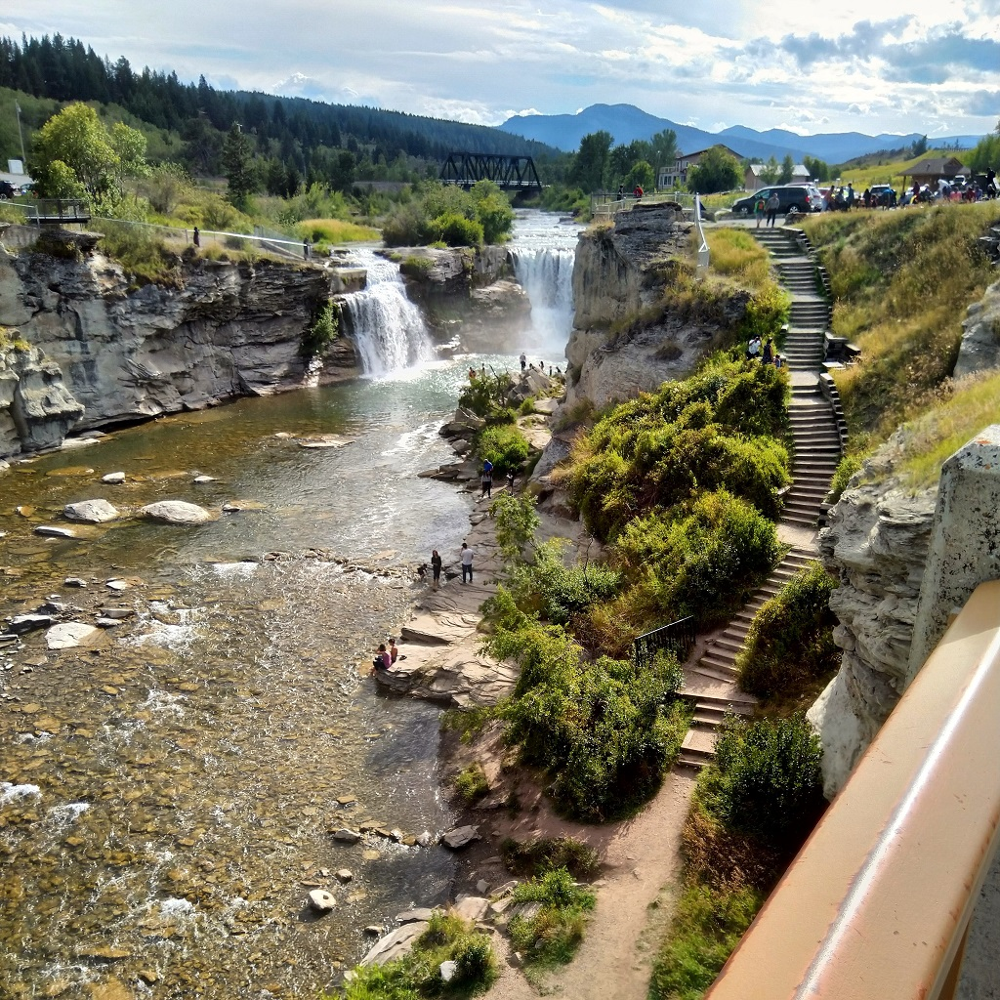
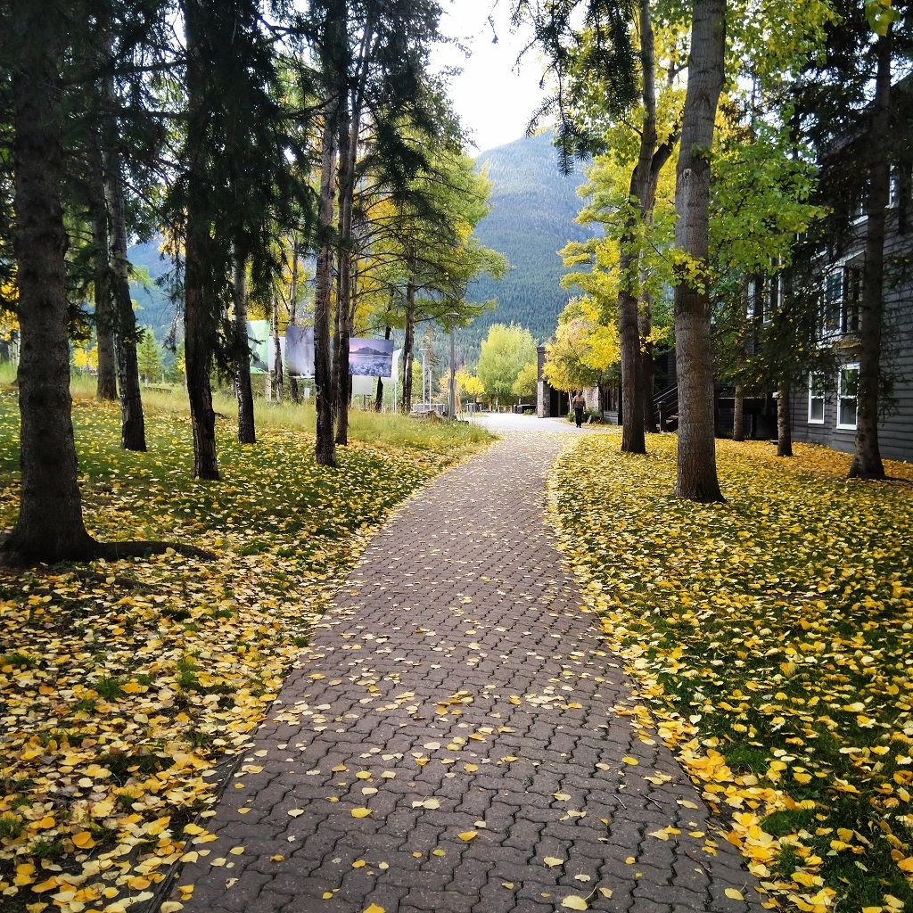

I love exploring and learning new things, even if it means making mistakes along the way. Because of this inquisitive nature, I am not afraid to dive into new technologies and switch between different environments as necessary. I have a strong web development background and am comfortable with back-end and front-end challenges. I've worked on projects in a LAMP (Linux, Apache, MySQL, PHP/Perl) environment, and also a Microsoft (Windows, IIS, SQL Server, C#/VB ASP.NET) ecosystem. As well, I have worked on custom themes and plugins for many WordPress and Drupal websites.
I grew up on a farm in Southeast Saskachewan. I started programming at a young age when my parents bought me a book on QBasic. I was immediately fascinated with how fun it was to create new, interactive applications on a computer. In the mid 1990's, access to the Internet (dial-up, of course) opened up a whole new world of programming. It was at this time that I started building my first simple web pages (when it was still acceptable to use framesets and blinking text 😄). I eventually completed a BSc. Comp. Sci. at the University of Regina. I've lived in Alberta since 2008 and still enjoy discovering all that this diverse province has to offer, both naturally and professionally.
My focus lately has been on learning new libraries such as Gatsby/React, Angular, and Vue.js. I have also been working with headless CMSs for creating JAMstack sites. I am amazed at how quickly new frameworks and tools are released, but definitely appreciate the richness it has brought to the web browsing experience.
I currently work at Banff Centre as a Senior Business Consultant, but also take on freelance projects on the side. Feel free to have a look at my portfolio and contact me if you have something in mind that you'd like to work on with me.

I have worked on many different projects over the past decade. You can have a look at my Behance portfolio and LinkedIn profile for more information on my previous work experience.
I am always looking to take on new challenges, so feel free to contact me if you think I might be able to help you with a project.
It can be difficult to juggle full-time work with these side projects, but I feel it is worth the effort. I find freelancing is where I am truly free to explore and learn beyond what is usually allowed in a regular workday.
I started freelancing in 2016 as a way to gain new experience separate from my full-time job. The majority of the freelance work that I do is in building and maintaining WordPress websites, but I also help support some .NET and Laravel web applications.
Please see my Behance profile for details on specific projects that I've worked on.

I have over 10 years of experience as a developer, working in a variety of different roles and work environments. Some of the places where I've worked include: Saskachewan Government Insurance (SGI), Ambyint/Pumpwell, Trigger Communications, and Banff Centre (currently). I've held various roles in IT support, server administration, application programming, and web development.
Please see my LinkedIn profile for further information on my past work experience.